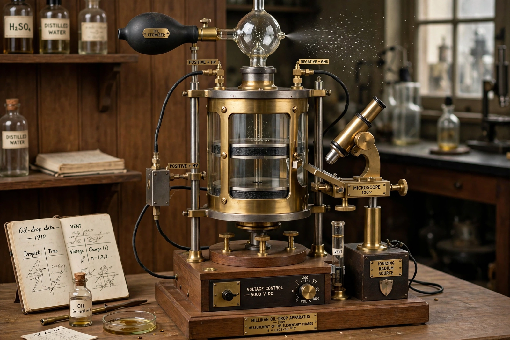

Robert Andrews Millikan

Robert Andrews Millikan (22 March 1868 – 19 December 1953) was an American experimental physicist who won the Nobel Prize in Physics in 1923 for the measurement of the elementary electric charge and for his work on the photoelectric effect. His oil-drop experiment, performed at the University of Chicago beginning in 1909, measured the charge of a single electron and demonstrated the quantisation of electric charge. He also verified Einstein's photoelectric equation and made important studies of cosmic rays, a term he popularised.
| Born | 22 March 1868, Morrison, Illinois, US |
|---|---|
| Died | 19 December 1953 (aged 85), San Marino, California, US |
| Known for | Oil-drop experiment; elementary charge; photoelectric effect; cosmic rays |
| Awards | Nobel Prize in Physics (1923) |
Biography
Millikan was born in Morrison, Illinois, the son of a Congregational minister. He studied at Oberlin College and received his PhD in physics from Columbia University in 1895, followed by a year of study in Germany. He joined the University of Chicago in 1896, where he wrote widely used textbooks and, with his student Harvey Fletcher, carried out the oil-drop experiments. In 1921 he moved to the California Institute of Technology (Caltech) as chairman of its executive council — effectively its president — and built it into one of the leading scientific institutions in the United States.
The oil-drop experiment
By balancing tiny charged oil droplets between gravity and an electric field, and watching them move through a telescope, Millikan measured the charges on many individual drops. The charges were always integer multiples of a single value, about 1.592 × 10⁻¹⁹ coulombs for the elementary charge — within roughly half a percent of the modern value. The experiment engaged in a famous controversy with the Viennese physicist Felix Ehrenhaft, who claimed to observe fractional "subelectron" charges. Later historians noted that Millikan's published data were selected from a larger set of observations, a practice debated in the literature on scientific ethics, though the final value was essentially correct.
Other work
Millikan's painstaking measurements of the photoelectric effect (1914–1916) confirmed Einstein's equation and yielded an accurate value of Planck's constant, despite Millikan's own initial scepticism about the photon hypothesis. In the 1920s and 1930s he studied cosmic radiation at various altitudes and latitudes, coined the name "cosmic rays", and debated their origin with Arthur Compton. He died in San Marino, California, in 1953.